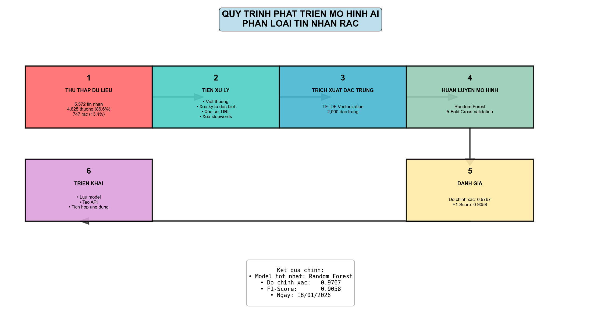
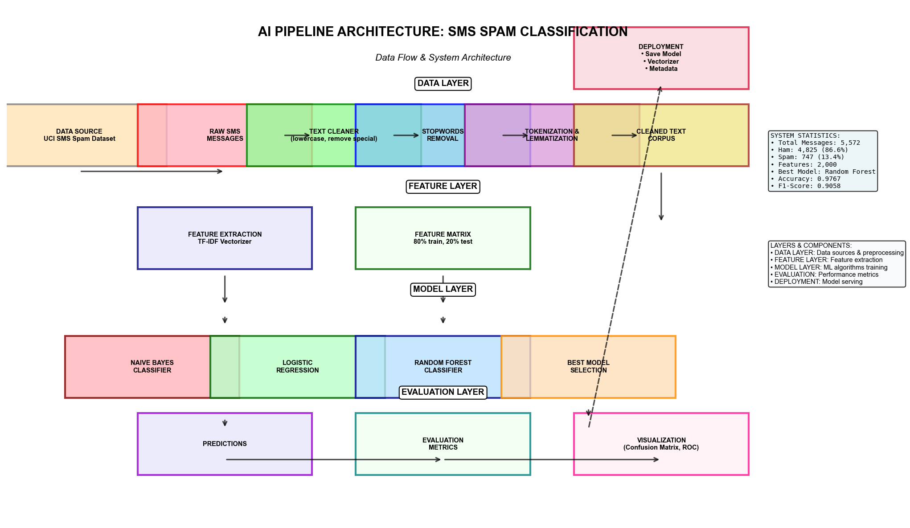

📊 BÁO CÁO DỰ ÁN AI
Phân loại tin nhắn rác (Spam Classification)
Ngày tạo: 18/01/2026 20:25
📋 TỔNG QUAN DỰ ÁN
Dự án sử dụng Machine Learning để tự động phân loại tin nhắn SMS thành tin thường (ham) và tin rác (spam). Mô hình được huấn luyện trên bộ dữ liệu UCI SMS Spam Collection.
📈 Thống kê dữ liệu:
- Tổng số tin nhắn: 5,572
- Tin thường (Ham): 4,825 (86.6%)
- Tin rác (Spam): 747 (13.4%)
🏆 KẾT QUẢ CHÍNH
Mô hình tốt nhất
Random Forest
Độ chính xác
0.9767
F1-Score (Spam)
0.9058
💡 Kết luận: Mô hình Random Forest đạt độ chính xác 0.9767 và F1-Score 0.9058 cho lớp spam. Mô hình đã sẵn sàng cho triển khai thực tế.
🔧 KIẾN TRÚC HỆ THỐNG AI PIPELINE
🔄 SƠ ĐỒ ĐƠN GIẢN

Sơ đồ 6 bước phát triển mô hình AI
1
Thu thập dữ liệu
5,572 tin nhắn từ UCI
2
Tiền xử lý
Làm sạch văn bản, xóa stopwords
3
Trích xuất đặc trưng
TF-IDF với 2,000 đặc trưng
4
Huấn luyện mô hình
Random Forest với Cross-Validation
5
Đánh giá
Kiểm tra độ chính xác và F1-Score
6
Triển khai
Lưu model và tạo API
🏗️ SƠ ĐỒ KIẾN TRÚC CHI TIẾT

Kiến trúc hệ thống với 5 lớp (Data, Feature, Model, Evaluation, Deployment)
📊 Thống kê hệ thống:
- Tổng tin nhắn: 5,572
- Ham: 4,825 (86.6%)
- Spam: 747 (13.4%)
- Features: 2,000
- Best Model: Random Forest
- Accuracy: 0.9767
- F1-Score: 0.9058
📌 Ghi chú: Sơ đồ đơn giản (trái) thể hiện quy trình 6 bước cơ bản. Sơ đồ chi tiết (phải) thể hiện kiến trúc hệ thống đầy đủ với các lớp: Data Layer, Feature Layer, Model Layer, Evaluation Layer và Deployment.
📊 PHÂN TÍCH DỮ LIỆU

Phân tích dữ liệu và phân phối các lớp
📈 ĐÁNH GIÁ MÔ HÌNH

So sánh hiệu suất các mô hình
💾 FILE ĐÃ TẠO
models/spam_classifier_random_forest.pkl
models/tfidf_vectorizer.pkl
ai_pipeline_simple.png
ai_pipeline_clean.png
data_analysis.png
model_evaluation.png
bao_cao_du_an_ai.html
tom_tat_du_an.txt
📁 Danh sách file hoàn chỉnh:
- models/spam_classifier_random_forest.pkl - Mô hình đã huấn luyện
- models/tfidf_vectorizer.pkl - Vectorizer TF-IDF
- ai_pipeline_simple.png - Sơ đồ quy trình đơn giản
- ai_pipeline_clean.png - Sơ đồ kiến trúc chi tiết
- data_analysis.png - Biểu đồ phân tích dữ liệu
- model_evaluation.png - Biểu đồ đánh giá mô hình
- bao_cao_du_an_ai.html - Báo cáo đầy đủ này
- tom_tat_du_an.txt - Bản tóm tắt dự án